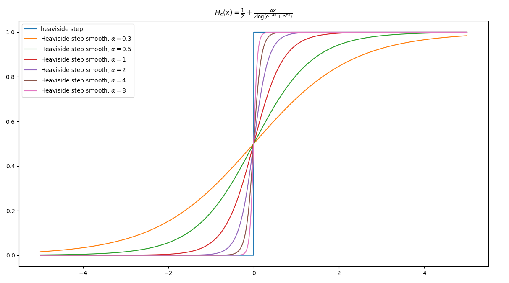
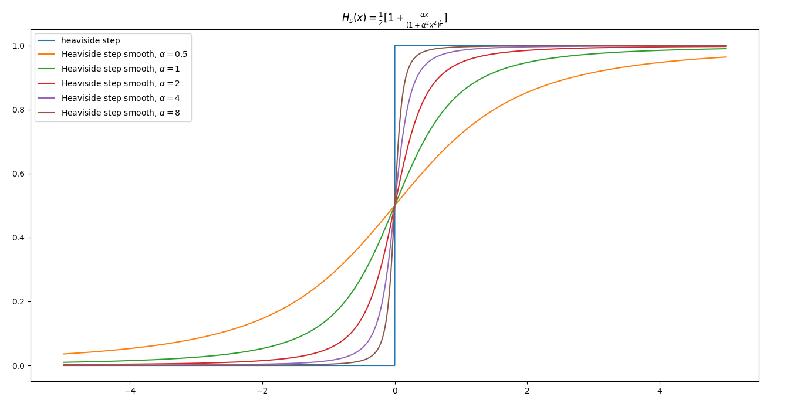
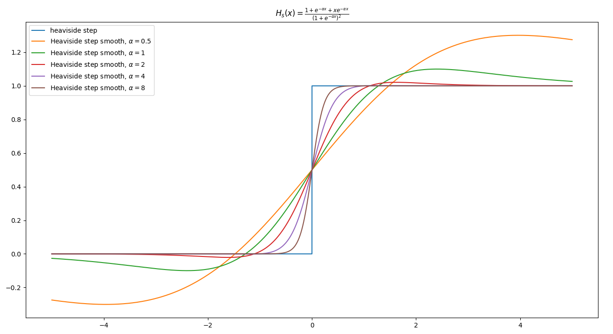
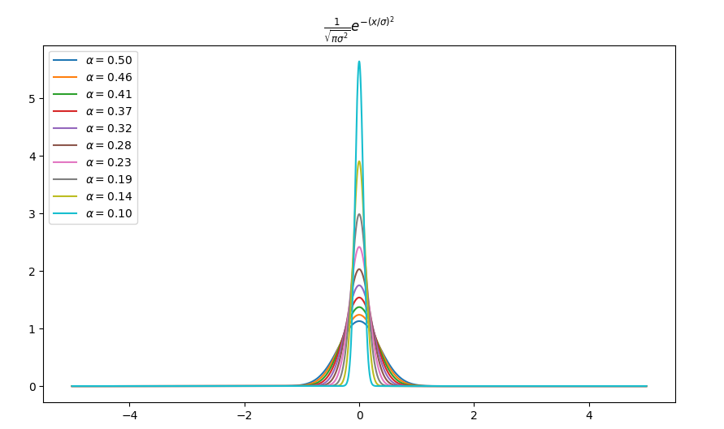
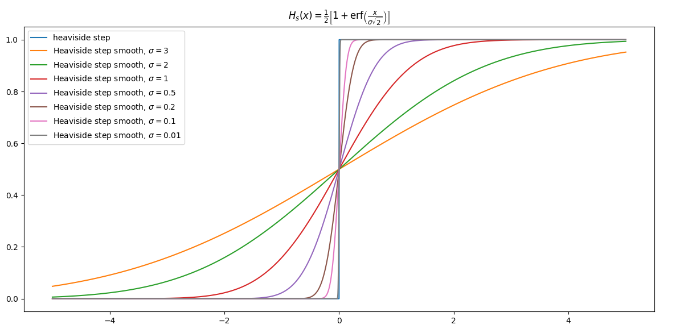
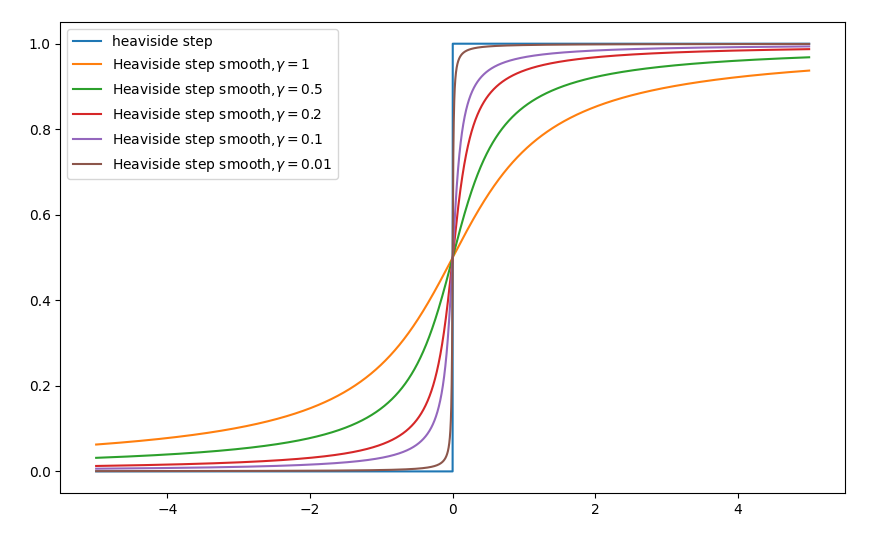
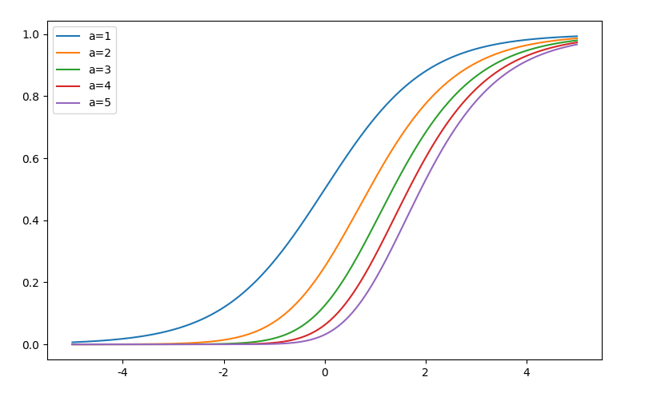
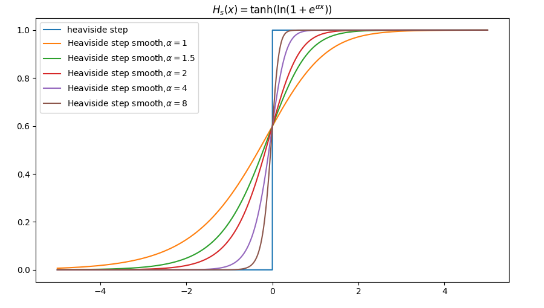
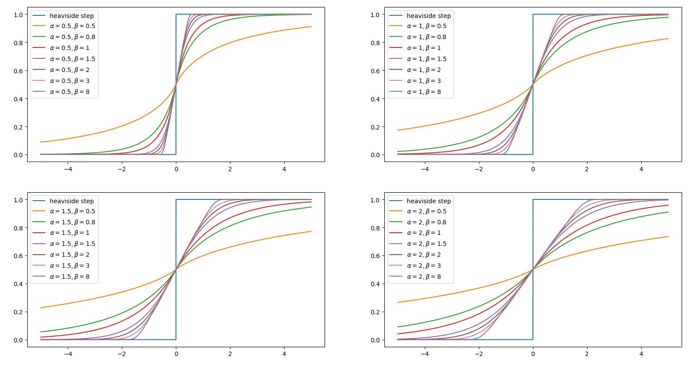
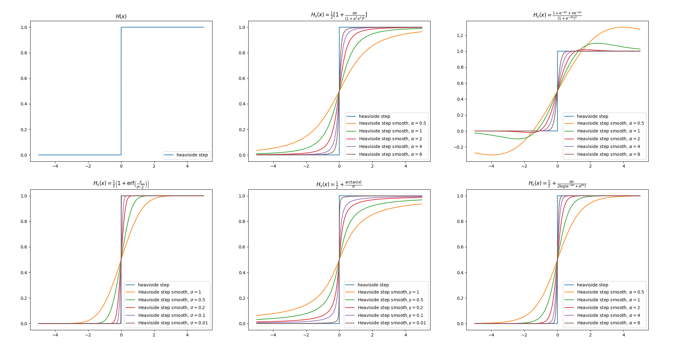

函数光滑近似（4）：Heaviside step函数及其应用
其实Heaviside step函数在本博客在介绍了很多次，不过比较松散，这篇把它系统梳理一下。
函数光滑近似在本博客已经有很多相关内容，这里整理一下：
- Sigmoid函数导出的另外一个角度，从光滑近似角度导出$\sigma(x)$
- Google的激活函数Swish是怎么设计出来的？从光滑近似角度导出Swish激活函数
- 从函数光滑近似的角度统一理解激活函数
- GELU由来：从狄拉克函数到GELU激活函数
- 多分类模型的输出为什么使用softmax？
- Mish激活函数的设计思路
- 一种基于光滑逼近的正态分布采样法
- 引入参数控制softmax的smooth程度
- 漫谈注意力机制（二）：硬性注意力机制与软性注意力机制
通过这些文章，我们意识到，深度学习中，似乎处处都是某几个基本函数的光滑逼近的踪影。这几个基本函数是什么？不熟悉的读者可以带着这个问题去读以上文章。
作为本系列的前三篇有：
本篇延续前三篇的内容，讲Heaviside step函数的光滑逼近。下面的推导需要使用到这三篇文章里面的相关结论。其实Heaviside step函数在本博客在介绍了很多次，不过比较松散，本篇详细讲述。
Heaviside step函数
Heaviside step函数，也称为unit step函数，它的定义有很多，比如作为分段函数，
这样的分段式在机器学习或深度学习中有重要意义，对于$x \in \mathbb{R}$，把它压缩到${0, 1}$取值上，使其完成类别判别输出。例如，如果logit取值为负半轴，则把类别判别为负类（0），如果取值为正半轴，则把类别判别为正类（+1）。$H(x)$正满足需求，但是要考虑两点：
- $H(x)$非光滑，对于机器学习或深度学习模型训练来说难求梯度
- 很多情况下，希望模型输出类别概率$p \in [0, 1]$，而不是类别判别${0, 1}$
此外，Heaviside step函数的好的光滑逼近$H_s(x)$应该满足关于点$(0, \frac{1}{2})$中心对称，即$H_s(x) = 1 - H_s(-x)$，于是$H_s(0) = \frac{1}{2}$。这种对称性对概率建模有意义，即如$P(x^+|\theta) = 1 - P(x^-|\theta)$。不过，如果是为设计$\operatorname{relu}(x)$的光滑逼近而逼近$H(x)$可以不用考虑这一点，如Mish激活函数的设计思路一文中的思路。
因此，寻找Heaviside step函数的光滑近似（本文使用$H_s(x)$表示）相当有意义。另外，根据以上分段式，有
也就是说，如果找到Heaviside step函数的光滑近似，也就找到激活函数$\operatorname{relu}(x)$的光滑近似。由于激活函数是神经网络的重中之重，因此除了光滑近似外，常常还要考虑三点：
- 非线性，这是必须的，否则神经网络就是一个线性函数
- 负半轴非单调性，以便增加非线性
- 在$x$较小时，应该满足$f(x) \approx x$，以便保证输出的统计不变性
像GELU激活函数也是从这里思路来的，可参看过去的文章GELU由来：从狄拉克函数到GELU激活函数。
Heaviside step函数还有作为$\max(0, x)$的导数的定义，
Heaviside step函数还有一种关于狄拉克函数（dirac function）的定义，
其中狄拉克函数为，
狄拉克函数满足，
因此Heaviside step函数的光滑近似的构造思路有三个：
- 寻找Heaviside step函数分段形式的封闭形式，如果该封闭形式具有非光滑的元素，则对该元素光滑处理
- 寻找$\max{0, x}$的光滑逼近，其导数光滑逼近Heaviside step函数
- 寻找狄拉克函数$\delta(x)$的光滑逼，近其积分光滑逼近Heaviside step函数
从封闭形式出发
寻找$H(x)$的封闭形式就需要发挥个人的数学直觉，在我看来，最容易构造的就是基于$f(x) = |x|$，因为改变符号容易自消除，进而得到负半轴的表示，
为使其在$x=0$处有定义，可以添加一个因子以及对称处理技巧，考虑到（这是函数光滑近似（3）：abs函数中的结论），
于是，
注意到这里包括函数，
图像对比（这里取$\alpha=2$），

$\alpha$取的值越大，逼近效果越好。该近似$H_s(x)$是关于$(0, \frac{1}{2})$中心对称的，因为$H_s(x) = 1 - H_s(-x)$，对于$H_s(0) = \frac{1}{2}$。
一个构造上的反例，考虑函数光滑近似（1）：maximum函数中的结论，
取$x_1 = -x, x_2 = x$，有
这个结论不能代入到$H(x)=\frac {x+|x|}{2|x|}$构造$H_s(x)$，因为前者在$x = 0$无定义，而$x\tanh(\alpha x)$在$x = 0$时取值也为$0$。但是如果$|x|$分别使用不同的近似来替代，能够解决这个问题，如
考虑符号函数的定义，
如果规定$H(0) = \frac{1}{2}$，那么有$H(x) = \frac{1}{2}[1 + \operatorname{sign}(x)]$。注意到，
去掉绝对符号，
于是有，
考虑添加一个缩放因子，
图像对比（这里取$\alpha=1$），

该近似$H_s(x)$是关于$(0, \frac{1}{2})$中心对称的，因为$H_s(x) = 1 - H_s(-x)$，对于$H_s(0) = \frac{1}{2}$。
从光滑逼近max函数的角度
由于，
在函数光滑近似（1）：maximum函数我们知道，
取$\alpha=1, x_1 = x, x_2 = 0$，有特例，
代入到Heaviside step函数的定义中，有
这个过程也可以参数化，结果是$H(x) \approx \sigma(\alpha x)$。这也是Sigmoid函数导出的另外一个角度中的结论。
类似的思路，考虑函数光滑近似（1）：maximum函数中的结论，
取$x_1 = 0, x_2 = x, \alpha=1$有特例，
代入到Heaviside step函数的定义中，有
以上推导取$\alpha$为一般形式得到$H_s(x)$的带参数形式，
图像对比（这里取$\alpha=3$），

该近似$H_s(x)$是关于$(0, \frac{1}{2})$中心对称的，因为$H_s(x) = 1 - H_s(-x)$，对于$H_s(0) = \frac{1}{2}$。
从光滑逼近狄拉克函数的角度
Heaviside step函数还有一种关于狄拉克函数（dirac function）的定义，
其中狄拉克函数为，
要求狄拉克函数满足，
这个函数看起来及其诡异难理解，这怎么能行？我们可以从极限的思路来理解它，假设有分段函数，
于是有，
于是$\delta(x)$的分段式成立。狄拉克函数的逼近形式具有两个特点：
- 关于$y$轴对称的偶函数，函数图形是“钟形”曲线
- 在$\mathbb{R}$上的积分为$1$
这两点最容易让人想到的是概率密度函数，因为它的积分一定为一。同时满足以上两点的概率密度函数容易让人想到标准正态分布与柯西分布，不过后者有一个“怪异”的性质，均值和方差不存在。
正态分布概率密度函数逼近，
$\sigma$不同取值下的可视化，

取极限，
证明，
如果对$\delta(x)$求积分，得到阶跃（Heaviside step）函数，
这里$\sigma$控制$\frac{1}{\sqrt{\pi \sigma^2}}e^{-(x/\sigma)^{2}}$逼近$\delta(x)$的程度，也就是相当于控制$\frac {1}{2}\left[1+\operatorname {erf} \left({\frac {x }{\sigma {\sqrt {2}}}}\right)\right]$逼近$H(x)$的程度，，$\sigma$越小，逼近程度越好。
于是有近似，
图像对比（这里取$\alpha=0.5$），

该近似$H_s(x)$是关于$(0, \frac{1}{2})$中心对称的，因为$H_s(x) = 1 - H_s(-x)$，对于$H_s(0) = \frac{1}{2}$。
类似第，柯西分布（Cauchy distribution）也可以作为狄拉克函数的光滑逼近，
有极限，
于是，
有极限，
图像对比，

该近似$H_s(x)$是关于$(0, \frac{1}{2})$中心对称的，因为$H_s(x) = 1 - H_s(-x)$，对于$H_s(0) = \frac{1}{2}$。其实我们还可以从几何直观上获得该光滑逼近。还有一个不那么容易想到的函数满足Heaviside step函数的光滑逼近，
根据特征变换，
变换到$[0, 1]$区间上，有
狄拉克函数的光滑逼近的构造还有很多，如
从概率论角度看，$0$中心对称，取值范围在$(-\infty, +\infty)$上且离对称轴越近越集中的随机变量的累积分布函数$F(x)$都可以用于逼近$H(x)$，这个直觉上很好理解。比如以上提及的正态分布与柯西分布满足条件。
扩展思路
如果我们去掉条件：Heaviside step函数的光滑逼近$H_s(x)$满足关于点$(0, \frac{1}{2})$中心对称，也就是去掉概率对称性$P(x^+|\theta) = 1 - P(x^-|\theta)$条件，那么Heaviside step函数的光滑逼近就相当于寻找取值区间为$[0, 1]$的“S”型函数。
有广义的Sigmoid函数，
$\alpha$取不同值时的“S”曲线差别，

这里这里取$\alpha=1$就得经典的$\sigma(x)$激活函数，可参看过去的文章Sigmoid函数导出的另外一个角度。
类似该思路，对$\tanh(x)$负半轴置0也获得类似逼近，
$\alpha$取不同值时的“S”曲线差别，

注意到这里$H_s(0)=0.6$，不再是$(0, \frac{1}{2})$中心对称。事实上，该逼近与Mish激活函数相关，可见过去文章Mish激活函数的设计思路。
类似地，还有，
总之，去掉关于点$(0, \frac{1}{2})$中心对称的约束后，都可以天马行空设计。
既然Heaviside step函数的光滑逼近就相当于寻找取值区间为$[0, 1]$的“S”型函数，那么该“S”型函数的微分曲线应该是“钟型”曲线，如正态分布。那么找到具体的“钟型”曲线，然后积分就是“S”型函数，通过区间处理获得$H_s(x)$。假设“S”型函数的曲线可以抽象地如下表达，
其中$x \in (-\infty, + \infty)$；$\alpha$是尺度参数，可以理解成是关于$x$的缩放因子，直观来看，像正态分布中的$\sigma$控制分散程度；$\beta$是形状参数，控制S的形状；$\mu$是位置参数，控制$F(0;\alpha, \beta，\mu)$的中心，直观上可以理解成正态分布中的$\mu$，这里一般取$\mu=0$。这里我们给出一个具体例子，广义正态分布的累积分布函数，
其中，
是不完全伽马函数（lower incomplete gamma function），它定义为，
与之对应的就是upper incomplete gamma function，
它们的和就是普通的$\Gamma(x)$，
Python实现的难点就是这个函数，Numpy下并没有自带lower incomplete gamma function，实现需要变通一下，具体如下，
1 | from scipy.special import gammainc |
我们来编程可视化一下，

通过这张图体会一下形状参数$\beta$、尺度参数$\alpha$是如何控制“S”型函数曲线的形状。
实现
整体可视化：

以上光滑逼近及其可视化：https://github.com/allenwind/smooth-approximation-function
可能会根据情况持续更新~
总结
以上我们从三个角度出发构造$H(x)$的光滑逼近，并得到一些优良的$H_s(x)$。最后总结一下$H(x)$的光滑逼近。
近似一，
近似二，
近似三，
近似四，
近似五，
近似六，
近似七，
于是，根据
可以构造更多$\operatorname{relu}(x)$激活函数的光滑逼近。例如，
本篇是函数光滑逼近的第四篇，以上的内容也讲了这些函数光滑逼近与激活函数、深度学习甚至与某些具体的深度学习Layer的关系，如果再往下写，应该是写$\delta(x)$函数的光滑逼近及其应用。待续~
转载请包括本文地址：https://allenwind.github.io/blog/15887
更多文章请参考：https://allenwind.github.io/blog/archives/